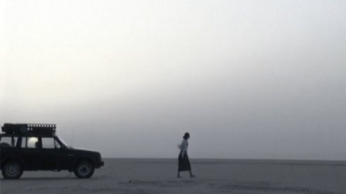

{kind=link}
Film & Literature: Ingeborg Bachmann

Ludwig wüst about Egyptian Eclipse
In 1997 I undertook my first trip to Egypt, carrying the book "Der
Fall Franza" by Ingeborg Bachmann. A hermetic text, written forty
years ago in a hermetic country, which at first glance does not
reveal itself and often does not allow a second glance. When I
planned to film "Egyptian Darkness", the third chapter of the book
"Franza", I undertook several trips to the deserts of Egypt
(1998-2000) to write my script on location. Since it was clear from
the beginning that it should be a silent movie, I made about 500
sketches and painted storyboards. In April 2001 we went to Cairo and
the Sinai desert to shoot our film. After a gruelling shooting in
Egypt (arrest of the whole team and threat of expulsion!), an
extremely difficult post-production (15 cut versions of the film) we
could finally celebrate the happy premiere in the Filmcasino Vienna
on April 28, 2002.
Egyptian Eclipse
|
Ludwig
Wüst
|
Saturday 12 oct | 8.30 pm | werkstattkino
“The Case of Franza“ by Ingeborg Bachmann is the description of an odyssey without return. The film tells about the escape of a woman from her bourgeois life. “So I went into the desert. Light broke down on me…“ The journey into the desert becomes an inner trip of a gradual extinction. Only the memory of a man follows the woman...